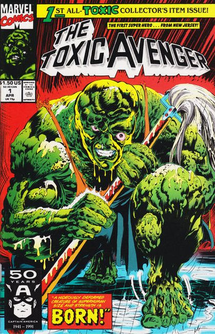

The Toxic Avenger is a 1984 American superhero comedy splatter film directed by Michael Herz and Lloyd Kaufman (credited as Samuel Weil) and written by Kaufman and Joe Ritter. The film was released by Troma Entertainment, known for producing low budget B-movies with campy concepts and gruesome violence. Virtually ignored upon its first release, The Toxic Avenger caught on with filmgoers after a long and successful midnight movie engagement at the famed Bleecker Street Cinemas in New York City in late 1985. It now is regarded as a cult classic.
Melvin Ferd is a stereotypical 98-pound weakling who works as a janitor at a health club in the fictional town of Tromaville, New Jersey, where the customers—particularly Bozo, Slug, Wanda and Julie harass him constantly. His tormentors get more and more violent, even deliberately killing a young boy on a bike with their car and taking photos of the carnage afterward.
One day, they trick Melvin into wearing a pink tutu and kissing a sheep. He is chased around the health club and out a second story window. He lands in a drum of toxic waste, which sets him on fire. After running down the street in a ball of flames, Melvin douses the flames in his bathtub. The chemicals cause him to transform into a hideously deformed creature of superhuman size and strength.

Written by Doug Moench
Illustrated by Rodney Ramos and Val Mayerik
Cover by Rodney Ramos and Armando Gil
Series: 11 issues 1991 - 1992
Publisher: Marvel
The origin of The Toxic Avenger. Mop boy Melvin Junko falls into a vat of toxic waste and becomes a hideous creature. Stan Lee and other creators 1991 New Year's resolutions. Jim Salicrup discusses the difference between the The Toxic Avenger movies and The Toxic Crusaders animated show and how they relate to this series.